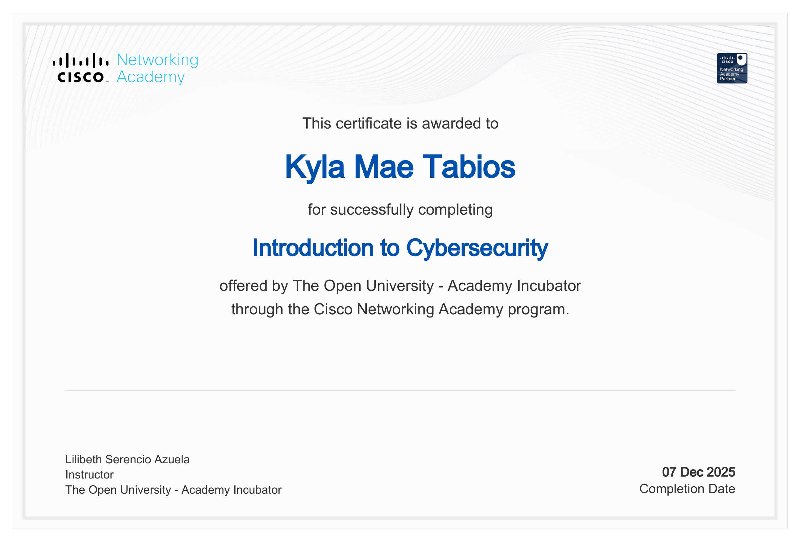
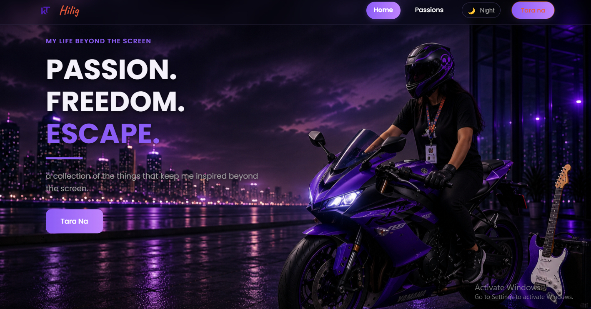

Aspiring Web Developer passionate about building practical digital solutions and continuously learning new technologies.. I enjoy building digital solutions, learning new skills, and exploring different experiences that help me grow both personally and professionally.


Hi, I'm Kyla Mae N. Tabios, an Information Technology fresh graduate passionate about web development and technology-driven solutions. I have hands-on experience in academic projects, technical support, AI-assisted tools, and network troubleshooting. I enjoy transforming ideas into functional digital solutions while continuously learning new technologies and improving my skills. I am eager to gain professional experience, contribute to meaningful projects, and grow as an IT professional.
Technologies I use to build digital experiences and solve technical challenges.
 SQL
SQL
 NetBeans
Figma
NetBeans
Figma
 Canva
Git / GitHub
Microsoft Office
Canva
Git / GitHub
Microsoft Office

Bachelors of Science in Information Technology
2022 - 2026
Angeles, Pampanga

Validates skills in managing databases and creating queries, forms, and reports in Access.
Official Cert
Demonstrates competence in using Excel for data analysis, formulas, and spreadsheet management.
Official Cert
Issued by Cisco Networking Academy in partnership with The Open University – Academy Incubator. Completed on December 7, 2025.
Official Cert
"Stream Your Ideas: A New Era of Content Creation with OBS Studio."
Seminar
"Utilizing Machine Learning for Modern Software Innovation."
Seminar
"Beyond the Screen: Showcasing Skills, Creativity, and Excellence."
Participation
Participated during JPSSITE Days 2025.
2nd Place
"Unleashing Creativity in Game Development and Graphic Designing."
Seminar
"Ethical Hacking: Juggling Technology and Morality."
Seminar
Role: Researcher & Documentation Lead
A Qr web-based ordering system that allows dine-in customers to scan a table QR code, browse a digital menu, place orders, track order status in real-time, and receive digital receipts without installing an app.
Role: WordPress Developer & Documentation Lead
A modernized restaurant ordering platform using WordPress and Elementor. Customized website layouts, service pages, and digital menus to improve restaurant ordering efficiency while managing overall system documentation.
Role: Java Developer
A learning management system created in NetBeans using Java Swing with an SQL database. Built to handle course organization, user progress tracking, and database integration.
Role: Solo Game Developer
A fast-paced 2D platformer game built from scratch using the Godot engine. Focused on creating tight movement mechanics, reflex-based level design, and custom timing skills.
Role: Web Developer
An electronic voting system developed to handle secure student or organization elections. Integrated backend logic for secure ballot submission and database management.
Role: UI/UX Designer
Designed and prototyped a collaborative learning platform tailored for student teachers. Built high-fidelity UI screens, interactive user flows, and wireframes to optimize user experience.

Role: Full-Stack Developer
A modern personal portfolio website that shares my life beyond the screen through my hobbies, passions, and personal interests. It offers a more authentic glimpse into who I am while showcasing my ability to design, develop, and deploy modern, responsive web applications.
The core values and soft skills I bring to every team and academic projects.
I take responsibility for my work and always strive to deliver quality results. I am willing to learn, improve my skills, and adapt to new challenges in a professional environment.
I enjoy analyzing problems and finding practical solutions through technology. I apply logical thinking when developing systems, troubleshooting issues, and improving processes.
I focus on creating organized and reliable outputs by carefully reviewing my work. I pay attention to details when coding, documenting, and testing projects.
I value teamwork and communication when working on projects. I enjoy sharing ideas, learning from others, and contributing my skills to achieve a common goal.
I gained hands-on experience assisting with technical concerns during my practicum. I helped troubleshoot network connectivity, hardware issues, and IT-related concerns to support daily operations.
I am always open to learning new technologies and improving my skills through projects, certifications, and hands-on experience.